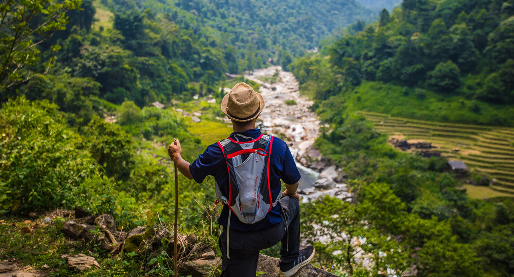

Finding Joy in Everyday Adventures
Adventure doesn't always mean scaling mountains or crossing oceans. Discover how to find excitement and new experiences in your daily life.
In today's fast-paced world, it's easy to get caught up in routines and overlook the potential for adventure that surrounds us. Whether it's trying a new hobby, exploring a different part of your city, or meeting new people, opportunities for adventure are everywhere.
Adventure is worthwhile in itself. Embrace the unknown, take risks, and discover the extraordinary moments hidden in the everyday. Life is a daring adventure or nothing at all.
Start by breaking out of your comfort zone. Take a different route to work, visit a new café, or attend a local event. These small changes can lead to unexpected and enriching experiences. Embrace spontaneity and be open to new possibilities. Adventure is as much about mindset as it is about the activity itself.
Remember, adventure is personal and can be as grand or as simple as you make it. The key is to remain curious and willing to explore the unknown. By integrating a sense of adventure into your daily life, you can add excitement, growth, and fulfillment to your everyday experiences. So, go ahead—embrace the adventure that awaits in the ordinary and watch as your world expands in wonderful ways.